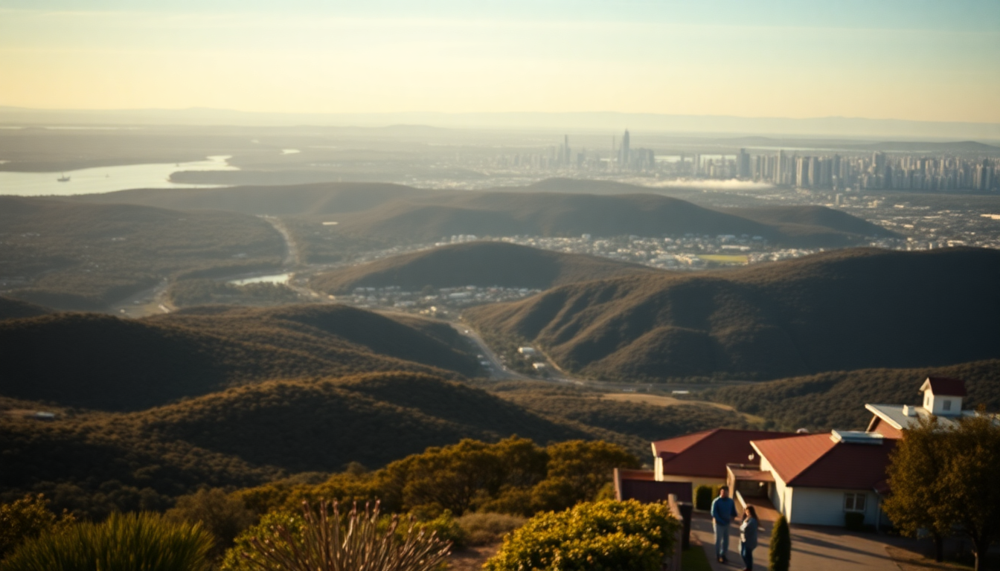

Getting Around Australia: Flights, Rentals & Campervans

I’ve driven the Great Ocean Road in a hatchback, flown budget into Cairns for a reef trip, and spent a week living out of a campervan on the Tasmanian coast. Australia is massive—roughly the size of the contiguous US—so your transport strategy matters more than your itinerary. Here’s how I’d actually plan getting between Sydney, Melbourne, and Cairns, with real costs and honest trade-offs.
Should you fly or drive between cities?
Fly. Every time. The drive from Sydney to Melbourne is about nine hours on a good day, and Sydney to Cairns is a punishing 25-hour slog. I’ve done the inland route through Dubbo once and regretted it—flat, hot, and endless. Instead, I book Jetstar or Virgin Australia for the short hops. The flight from Sydney to Melbourne takes 90 minutes and often costs under $80 AUD if you book three weeks out. Cairns to Sydney is about three hours, but I’ve snagged one-way tickets for $120 AUD.
- Sydney to Melbourne: Fly into Tullamarine (Melbourne’s main airport) or Avalon (cheaper, but further from the city). I prefer Tullamarine for the SkyBus connection straight to Southern Cross Station.
- Melbourne to Cairns: Direct flights with Jetstar or Qantas. Avoid the red-eye if you can—landing at 6 AM in Cairns means your hotel room won’t be ready.
- Sydney to Cairns: I’ve done this with Rex Airlines for a bargain, but their schedule is sparse. Check Webjet for combos.
One catch: luggage fees on budget carriers add up fast. I pack a carry-on and a small backpack for any trip under two weeks.
What’s the best way to rent a car in Sydney or Melbourne?
Renting a car in the city is fine, but don’t pick it up at the airport unless you want to pay the “airport premium.” I’ve saved $40–$60 a day by taking a train from Sydney Airport to Mascot station and walking to a Hertz or Budget office nearby. In Melbourne, the East Melbourne rental depots off Victoria Parade are cheaper than the Tullamarine counters.
- Sydney: Pick up from Surry Hills or Chippendale—both have Thrifty and Avis offices with decent rates. Avoid the Circular Quay location; it’s a tourist trap with inflated prices.
- Melbourne: I rented from Europcar on Flinders Street last year—fast service, and I drove straight to the Great Ocean Road without hitting city traffic.
- Insurance: Your credit card might cover collision damage, but check the fine print. I always buy RentalCover.com for peace of mind—about $9 AUD per day.
One tip: book an automatic transmission. Manuals are cheaper but rare in rental fleets, and you’ll waste time hunting for one.
Is a campervan worth it for long stretches?
Yes, but only if you’re covering a specific region, not hopping between cities. I rented a Britz campervan from Melbourne and drove the Great Ocean Road to Adelaide over ten days—it was the best trip I’ve done in Australia. The freedom to pull over at Lorne or Port Campbell and cook dinner on a beach is unmatched. But taking a campervan from Sydney to Cairns? Nightmare. You’ll spend half your trip driving through the New South Wales outback with zero ocean views.
- Where it works: Tasmania (Hobart to Launceston loop), South Australia (Flinders Ranges), or Queensland’s coast (Brisbane to Cairns, if you have three weeks).
- Where it doesn’t: City-heavy itineraries. Parking a 20-foot campervan in Sydney’s CBD is a headache—I once spent 40 minutes circling Darlinghurst for a spot.
- Cost: A basic campervan from Apollo or Maui runs $100–$150 AUD per night in peak season (December–February). Off-peak, it’s closer to $70. Factor in fuel (campervans get about 12L/100km) and campground fees ($20–$40 per night at Big4 parks).
How do you get around Cairns without a car?
You don’t need one. Cairns is small—the Esplanade to the Cairns Lagoon is a 15-minute walk. I stayed at Gilligan’s Backpacker Hotel (loud but central) and walked everywhere. For the reef, most tours pick you up from your hotel. For the Daintree Rainforest, I booked a shuttle through Billy Tea Safaris—$130 AUD for a full day, including a croc-spotting cruise on the Daintree River.
- Public bus: The Sunbus network covers the city and beaches (Palm Cove, Port Douglas) for $4–$8 AUD per ride. I used it to reach Kuranda via the Skyrail Rainforest Cableway.
- Taxis and rideshares: Uber is reliable in Cairns, but surge pricing hits after 10 PM. I paid $25 AUD from the Cairns Night Markets back to my hotel one night—not terrible.
- Bike rental: Cairns Bike Hire on Aplin Street rents for $30 AUD per day. The Cairns Esplanade Bike Path is flat and scenic.
What’s the honest deal with driving the Great Ocean Road?
It’s worth it, but manage your expectations. The road is two lanes for most of the stretch, and in peak summer (December–February), you’ll crawl behind caravans. I started from Torquay at 7 AM and reached the Twelve Apostles by noon—avoiding the worst traffic. The highlights are real: Loch Ard Gorge, Gibson Steps, and the Otway National Park for a quick rainforest walk.
- Where to stop: Apollo Bay for fish and chips at The Fishermen’s Co-op; Port Campbell for a pub meal at The Port Campbell Hotel.
- Where to skip: London Bridge is overcrowded and underwhelming. Save time for Bay of Islands instead.
- Overnight: I booked a room at Seafarers Getaway in Port Campbell—pricey ($250 AUD) but the view of the Southern Ocean from the balcony was worth it.
FAQ
Is it cheaper to fly or drive between Sydney and Melbourne? Flying is almost always cheaper if you book in advance. A one-way Jetstar flight costs $60–$80 AUD, plus $15 for a carry-on bag. Driving costs about $100 AUD in fuel (assuming a small car) plus tolls on the M1 and M5 in Sydney—around $20 AUD total. Add wear and tear, and flying wins. But if you need a car in Melbourne, the rental cost might tip the scales.
Do I need a special license to drive a campervan in Australia? No. A standard driver’s license from your home country works for up to three months. If your license isn’t in English, carry an International Driving Permit. For campervans over 4.5 tonnes (rare for rentals), you might need a heavy vehicle license—check with Britz or Apollo before booking.
Can I use my phone for navigation in remote areas? Partially. Telstra has the best coverage in the outback, but even they drop out between Coffs Harbour and Byron Bay. I downloaded offline maps on Google Maps before leaving Sydney and bought a Telstra prepaid SIM ($30 AUD for 10GB) for the trip. For the Nullarbor Plain or Tasmania’s west coast, carry a paper map as backup—I’ve been saved by a Hema map more than once.
Conclusion
- Fly between Sydney, Melbourne, and Cairns to save time and money—book Jetstar or Virgin Australia three weeks ahead.
- Rent a car from a city depot (not the airport) for day trips like the Great Ocean Road; use Thrifty or Europcar in Surry Hills or Flinders Street.
- Campervans shine in Tasmania or the Queensland coast, not for city-to-city hops—stick with Britz or Apollo for rentals.
- In Cairns, skip the car entirely; walk the Esplanade, take Sunbus to Kuranda, and book reef tours with pickup.
- Drive the Great Ocean Road early (before 8 AM) to beat traffic, and overnight in Port Campbell for the best sunset views.